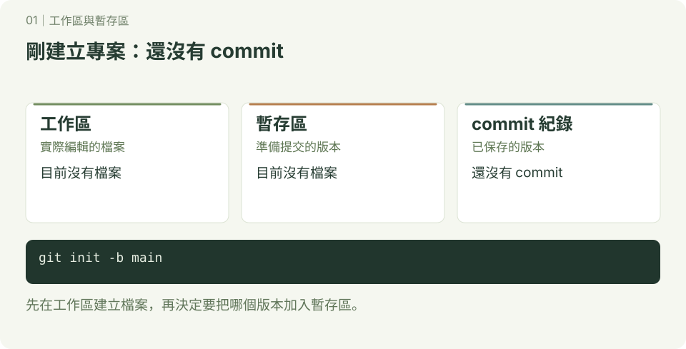

工作區、暫存區與 commit
這一章會建立一個練習專案，學會用 status 檢查狀態、用 add 選擇要保存的內容，再用 commit 建立記錄點。請先完成環境安裝與設定及 VS Code Source Control 入門，並在範例課程練習幾次 Commit。這裡的指令可在 VS Code Terminal 執行，與圖形介面操作同一個 Git。
1. 先認識三個位置
| 位置 | 用途 | 例子 |
|---|---|---|
| 工作區 | 你目前編輯的檔案 | 剛寫好的 index.txt |
| 暫存區 | 準備放進下一筆 commit 的檔案版本 | 執行 git add index.txt 時的內容 |
| commit 紀錄 | 已保存的版本紀錄 | 執行 git commit 後的記錄點 |
git add 保存檔案當下的版本到暫存區；之後再修改檔案，暫存區不會自動更新。git commit 記錄的是暫存區的內容。

2. 跟著做：建立第一筆 commit
以下使用 VS Code Terminal 的 macOS／Linux shell 或 Windows Git Bash。選一個練習位置，確認 git-first 資料夾尚不存在，且不在另一個 Repository 裡。每個 bash 區塊是要輸入的指令；text 是預期結果，不用輸入。
mkdir git-first
cd git-first
git init -b main
printf 'Home page\n' > index.txt
git status --short預期看到 ?? index.txt：檔案存在，但 Git 尚未追蹤。接著選擇檔案並建立記錄點：
git add index.txt
git status --short
git commit -m "新增首頁"
git status --short
git log --oneline第一次 status 顯示 A index.txt，表示新增的檔案已暫存；commit 後的 status --short 沒有輸出，表示沒有待處理的差異。log 會顯示提交訊息和一串識別碼，識別碼每個人不同。檔案與暫存區並沒有因為 commit 而消失。
3. 跟著做：add 後再修改
操作位置仍在 git-first。先暫存第一行修改，再加入第二行：
printf 'About our team\n' >> index.txt
git add index.txt
printf 'Contact us\n' >> index.txt
git status --short
git diff
git diff --stagedstatus 會顯示 MM index.txt：第一個 M 表示已暫存的修改，第二個 M 表示暫存後又有修改。git diff 比較工作區與暫存區，看到 Contact us；git diff --staged 比較暫存區與最新 commit，看到 About our team。
現在先提交暫存的版本，再檢查：
git commit -m "新增團隊介紹"
git show --stat --oneline HEAD
git status --short這筆 commit 包含 About our team，但不包含稍後加入的 Contact us；該行仍留在工作區，狀態顯示 M index.txt。把剩下的修改也保存：
git add index.txt
git commit -m "新增聯絡資訊"
git status --short
git log --oneline完成後狀態沒有輸出，歷史有三筆提交。想檢查各筆內容，可以執行 git show HEAD 查看最新提交。
4. 換你做
在同一個 git-first 建立 about.txt，寫一句介紹，使用 status、add、commit 保存，再用 git log --oneline 確認。完成後，試著回答：
- 修改檔案後，為什麼要重新
git add？ git diff和git diff --staged各看哪兩個位置的差異？status --short沒有輸出，代表檔案消失了嗎？
答案：暫存區保留的是 add 當下的版本；兩個 diff 分別比較工作區與暫存區、暫存區與最新提交；乾淨狀態只表示沒有待處理的差異。
要取消暫存或還原修改時，參考還原檔案與取消暫存；修改最後一筆提交請看整理最後一筆提交。
想多練習 diff 與選擇提交內容，可以參考延伸範例。